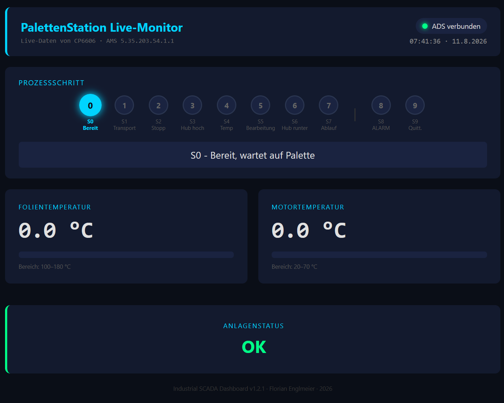
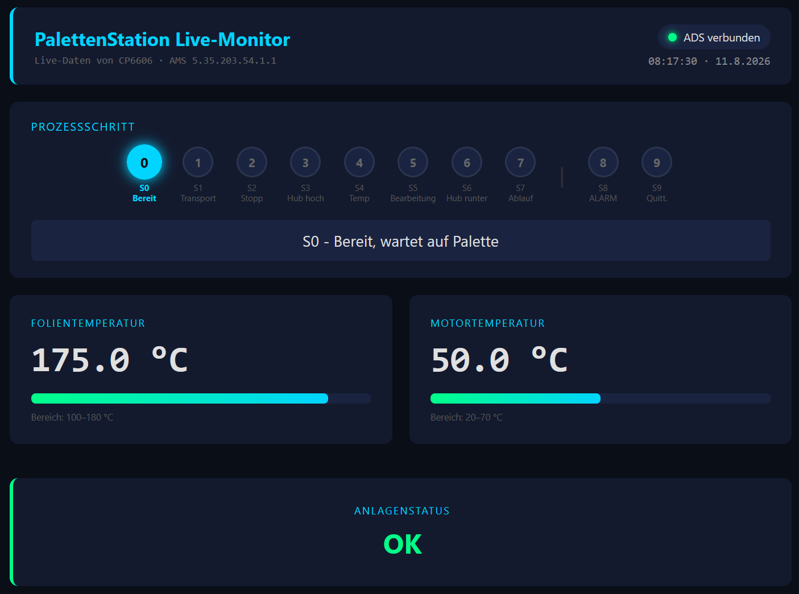
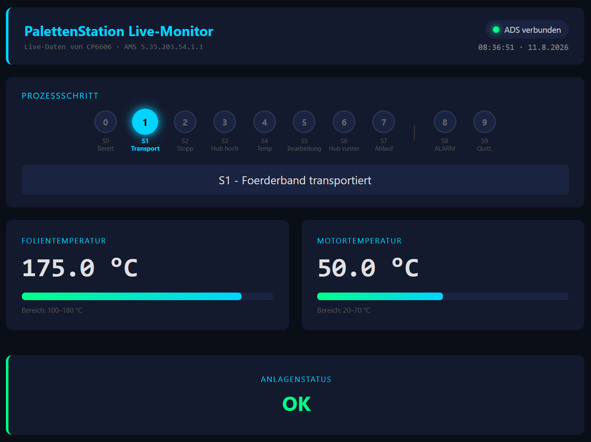
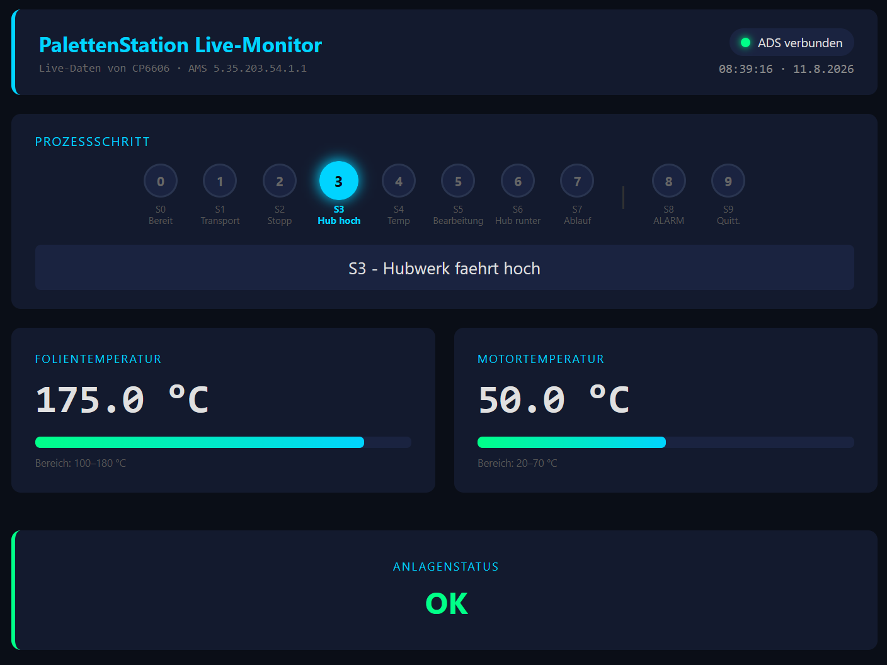

01 Kompetenzen aus diesem Projekt
FB_NotHalt) vorhanden — bewusst als Lernmodell gekennzeichnet, kein zertifiziertes Safety-System (dafür fehlt reale TwinCAT-Safety-Hardware)02 Architektur
PalettenStation (TwinCAT 3)
Structured-Text-Programm mit 10-stufiger Schrittkette (S0–S9), Simulationsmodus über GVL_IO.SIM_Aktiv und Alarm-/Quittierungslogik. Läuft auf realer Beckhoff-Hardware (CP6606 + EK1100 EtherCAT-Koppler).
SensorAPI (REST)
ASP.NET Core Web API. AdsService liest live SPS-Werte über symbolische Adressierung, REST-Endpunkte liefern sie als JSON. Eigenes Dashboard mit Alarm-Quittierung.
WcfDemo (SOAP)
CoreWCF-Service mit BasicHttpBinding, Contract-first über ServiceContract/DataContract, WSDL-Metadaten. Nutzt denselben AdsService wie SensorAPI — nur SOAP statt REST als Außenhülle. Eigenes Live-Dashboard, aus demselben Prozess ausgeliefert.
Fundamentals
Begleitende C#-Lernstrecke: OOP, LINQ, async/await, Exception Handling — der Unterbau, auf dem die beiden Services aufsetzen.
03 Versionshistorie
04 Engineering-Praxis
Silent Bugs ernst nehmen
Ein Feld wie AdsVerbunden unterscheidet "SPS nicht erreichbar" von einer echten Null-Messung — ein Fehler, der sich sonst lautlos als falscher Messwert tarnt. Dasselbe Prinzip auch bei Konfigurationsdateien angewendet, nicht nur bei Messwerten.
Guard Clauses & Exception Handling
Jede ADS-Read-Methode prüft die Verbindung vorab und fängt Fehler ab, statt die ganze API bei einem Netzwerk-Hänger mitzureißen — produktionsnahes Denken statt Happy-Path-Code.
Contract-first statt Code-first
Der SOAP-Service ist über ServiceContract/DataContract explizit spezifiziert und liefert eine maschinenlesbare WSDL — das Gegenstück zu OpenAPI/Swagger auf der REST-Seite.
Diszipliniertes Git-Workflow
Semantische Versionierung, annotierte Tags pro Meilenstein, inhaltlich getrennte Commits (Feature vs. Bugfix) — Historie, die sich später noch nachvollziehen lässt.
05 Screenshots

S0 — Bereit
Anlage wartet auf Palette. ADS verbunden, Anlagenstatus OK.

S0 — Live-Werte
Folien- und Motortemperatur live von der SPS, mit Grenzwert-Balken.

S1 — Transport
Förderband aktiv, Schrittkette und Temperaturen aktualisieren live im 2-Sekunden-Takt.

S3 — Hub hoch
Hubwerk fährt, aktuelle Position in der Schrittkette farblich hervorgehoben.
06 Dokumentation
TUTORIAL.md
C#-Lernjournal — 15 Kapitel von Hello World über OOP, LINQ, async/await bis ASP.NET und JS-Dashboard.
Auf GitHub lesen →TUTORIAL_v1.0_TwinCAT_Roadmap.md
Anlagenlogik, Hardware, EL3681-Planung, Phasen-Roadmap.
Auf GitHub lesen →TUTORIAL_v1.2_ADS_Integration.md
Die Brücke: symbolische Adressierung, PLC↔.NET-Typ-Mapping, Silent-Bug-Fallen (TwinCAT INT ≠ C# int).
TUTORIAL_v1.3_CoreWCF_SOAP.md
REST vs. SOAP, ServiceContract/DataContract, ABC-Prinzip, WSDL vs. Swagger.
Auf GitHub lesen →